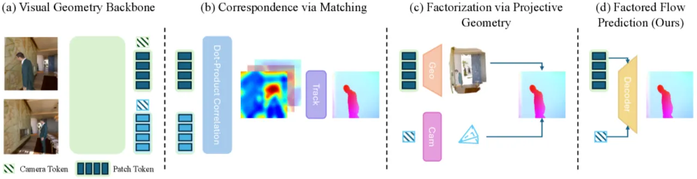
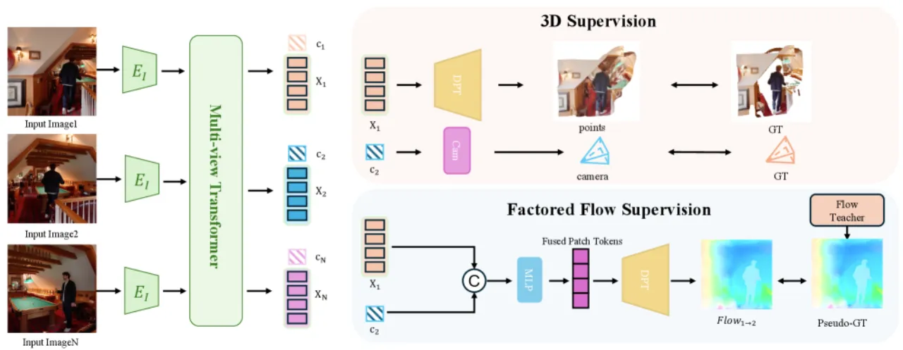
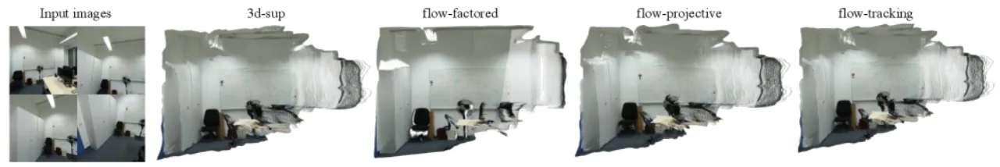
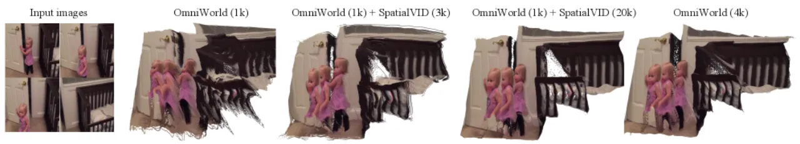
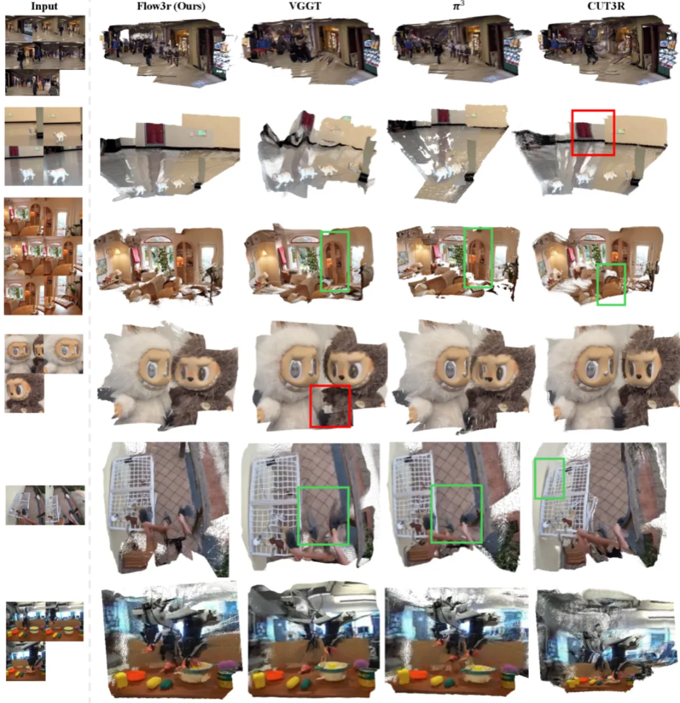
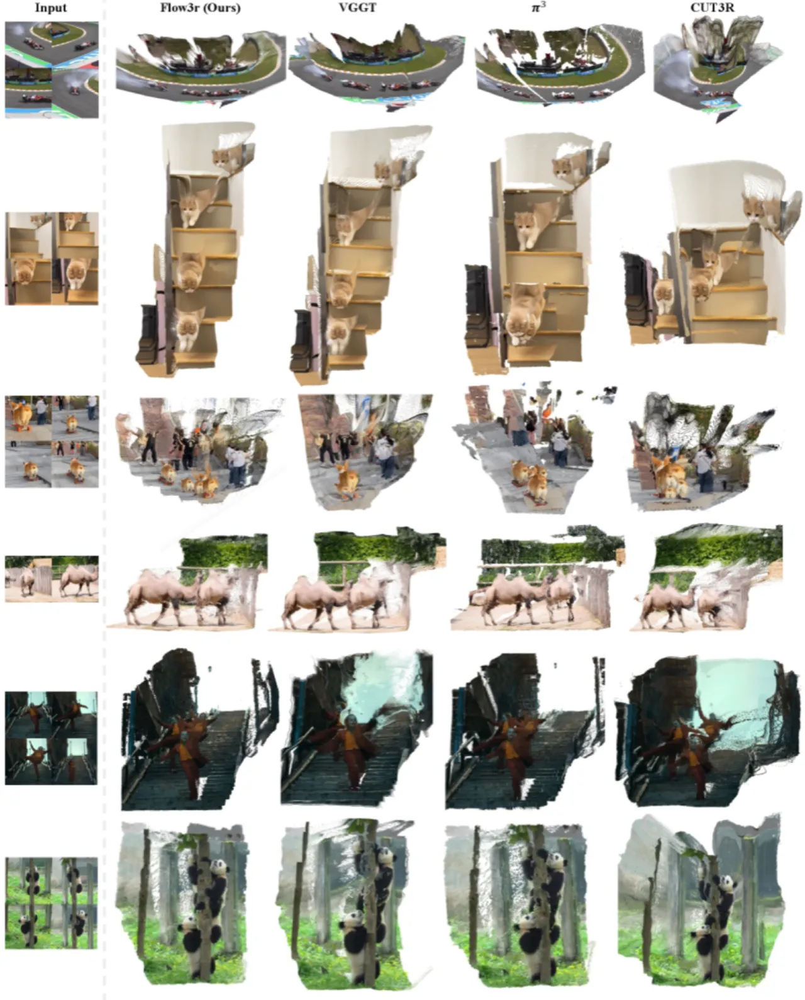

Flow3r 提出以2D稠密对应关系（"光流"）作为监督信号，使视觉几何网络能够从无标注视频中学习，无需昂贵的3D/相机标注。核心洞察是：光流预测模块应当被"因子化"——用源视图的几何特征与目标视图的相机特征共同预测光流，从而同时指导场景几何与相机运动的学习，并自然推广至动态场景。
当前最先进的前馈式3D/4D重建系统依赖稠密几何与相机位姿标注进行训练——这类标注在大规模场景下获取代价高昂，对于动态真实世界场景尤其稀缺。这一瓶颈使视觉几何学习无法像语言模型或视觉Transformer那样从海量无标注数据中扩展。
"Current feed-forward 3D/4D reconstruction systems rely on dense geometry and pose supervision — expensive to obtain at scale and particularly scarce for dynamic real-world scenes."

光流（两帧之间的像素级稠密对应关系）是经典多视角方法中的核心信号，也是近年稠密对应估计器的输出目标。 Flow3r 的关键研究问题是：如何利用光流有效地监督视觉几何学习？ 现有方法（如 VGGT）虽尝试将光流预测作为辅助目标，但仅通过局部特征匹配预测光流，主要鼓励视觉判别特征，并不直接促进几何与相机位姿的学习。
Flow3r 在标准有监督视觉几何网络（如 π³、VGGT）基础上，附加一个因子化光流预测头，将源视图的几何特征（geometry latents）与目标视图的相机特征（camera latents）融合后，通过 DPT 头解码出稠密光流预测。训练时对有标注数据使用真实监督，对无标注视频则由教师模型（UFM）提供伪标注光流进行监督。

对于静态场景，源视图 i 到目标视图 j 的光流仅由源视图几何（全局点图）和目标相机位姿决定。 受此启发，Flow3r 不进行解析投影，而是训练一个学习型非对称光流预测模块：
F̂i→j = Φflow(gi, cj)
其中 gi 为源视图几何特征，cj 为目标视图相机特征（来自多视角 Transformer 的输出）。
这一设计绕过了对显式几何元素的解码，提升了鲁棒性，并使模型能够端对端训练。
对于动态场景，光流自然被理解为相机运动与场景运动的叠加，无需额外设计。

Flow3r 在两阶段训练：首先冻结骨干网络，仅在有标注数据上训练光流头；然后解冻全部参数，结合有标注与无标注数据端对端微调。 流监督损失采用鲁棒回归损失（广义 Charbonnier loss），并使用可视性掩码 C 屏蔽遮挡区域：
Lflow = 1/Σp∈Ω C[p] · Σp∈Ω C[p] · ℓrobust(‖ûi→j[p] − ui→j[p]‖₂)
Flow3r 在两类设置下评估：(1) 受控对照实验，验证因子化光流的有效性；(2) 将其集成进 π³ 与 VGGT 骨干，在8个基准（4个动态 + 4个静态）上对比前沿前馈方法。 有标注数据集涵盖 CO3Dv2、Habitat、ARKitScenes、ScanNet++ 等约11个多视角重建数据集（约34K序列），无标注视频来自 Kinetics-700、SpatialVID、EPIC-KITCHENS（~800K序列）。
| 模型变体 | 静态 RRA@30↑ | 静态 RTA@30↑ | 静态 CD↓ | 静态 MSE↓ | 动态 RRA@30↑ | 动态 RTA@30↑ | 动态 MSE↓ |
|---|---|---|---|---|---|---|---|
| 3d-sup（无无标注数据基线） | 0.7500 | 0.6929 | 0.030 | 0.088 | 66.01 | 62.37 | 0.637 |
| flow-projective | 0.6700 | 0.4572 | 0.033 | 0.088 | 61.23 | 56.12 | 0.710 |
| flow-tracking | 0.7438 | 0.7021 | 0.030 | 0.089 | 68.56 | 62.95 | 0.628 |
| flow-factored（Flow3r） | 0.7700 | 0.7366 | 0.026 | 0.078 | 76.26 | 68.84 | 0.598 |
| 方法 | Kinetics700 MSE↓ | Kinetics700 f-score@5↑ | EPIC-KITCHENS MSE↓ | EPIC-KITCHENS f-score@5↑ | Sintel f-score@5↑ | Bonn f-score@5↑ |
|---|---|---|---|---|---|---|
| DUSt3R | 0.312 | 0.528 | 0.338 | 0.493 | 0.271 | 0.800 |
| CUT3R | 0.303 | 0.575 | 0.338 | 0.493 | 0.676 | 0.899 |
| VGGT | 0.220 | 0.617 | 0.220 | 0.620 | 0.595 | 0.884 |
| π³ | 0.200 | 0.620 | 0.200 | 0.620 | 0.523 | 0.905 |
| Flow3r（本文） | 0.256 | 0.599 | 0.199 | 0.622 | 0.426 | 0.954 |
Flow3r 在所有动态数据集上一致优于 DUSt3R、CUT3R、VGGT 和 π³。
| 方法 | CO3Dv2 RTA@30↑ | CO3Dv2 f-score@5↑ | ScanNet RTA@30↑ | ScanNet f-score@5↑ | NRGBD f-score@5↑ | 7-Scenes f-score@5↑ |
|---|---|---|---|---|---|---|
| DUSt3R | 90.68 | 0.783 | 57.14 | 0.831 | 93.25 | 0.714 |
| CUT3R | 90.68 | 0.737 | 71.39 | 0.740 | 95.63 | 0.695 |
| VGGT | 87.62 | 0.884 | 89.17 | 0.931 | 99.21 | 0.665 |
| π³ | 97.49 | 0.905 | 91.44 | 0.964 | 99.20 | 0.737 |
| Flow3r（本文） | 97.62 | 0.876 | 92.89 | 0.943 | 99.60 | 0.807 |

固定1K有标注 OmniWorld 序列，逐步增加无标注 SpatialVID 数据量：
| 有标注序列数 | 无标注序列数 | RRA@30↑ | MSE↓ |
|---|---|---|---|
| OmniWorld (1K) | — | 66.01 | 0.637 |
| OmniWorld (1K) | SpatialVID (3K) | 76.26 | 0.598 |
| OmniWorld (1K) | SpatialVID (10K) | 78.45 | 0.560 |
| OmniWorld (1K) | SpatialVID (20K) | 81.12 | 0.532 |
| OmniWorld (4K，参考基线） | — | 78.68 | 0.565 |
使用20K条无标注视频（1K有标注 + 20K无标注）可超越4K有标注数据的模型，证明因子化光流监督的扩展性。


以 VGGT 和 π³ 为骨干，逐步加入有标注流监督与无标注流监督：
无标注数据带来的增益主要来自无标注视频，而非多任务学习本身。
"Flow3r relies on off-the-shelf models to provide pseudo-ground-truth flow supervision, and there can be domains where such 2D prediction fails." — 在某些分布外领域（如医学图像、航拍等），预训练2D光流模型可能给出低质量伪标注，从而影响几何学习。
"Although our factored flow formulation elegantly handles dynamic scenes…, Flow3r may struggle under complex scenes with multiple independently moving components." — 当场景中存在多个独立运动物体时，单一相机特征 token 可能无法完整编码所有运动信息。
"Our current experiments operate at a moderate scale (~800K video sequences for flow supervision), and scaling to truly large-scale settings (~10-100M videos) presents an exciting but unexplored direction." — 尽管~800K序列已展现出良好的扩展性，更大规模训练的潜力尚未被探索，且对算力与存储提出了新挑战。
作者本人指出："our factored flow prediction is suboptimal for standalone flow estimation — since it enforces an information bottleneck by conditioning on the target-view camera token rather than patch features that contain richer visual cues." 即该设计优化的是几何监督信号质量，而非光流预测本身的精度。